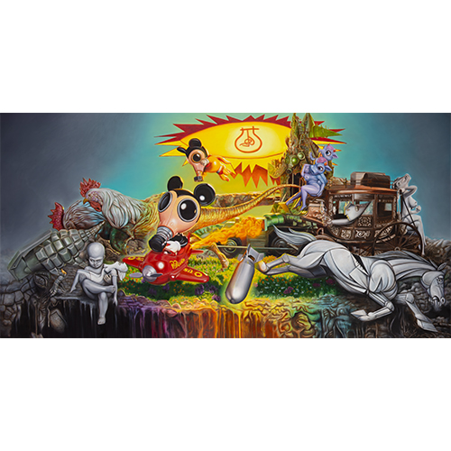
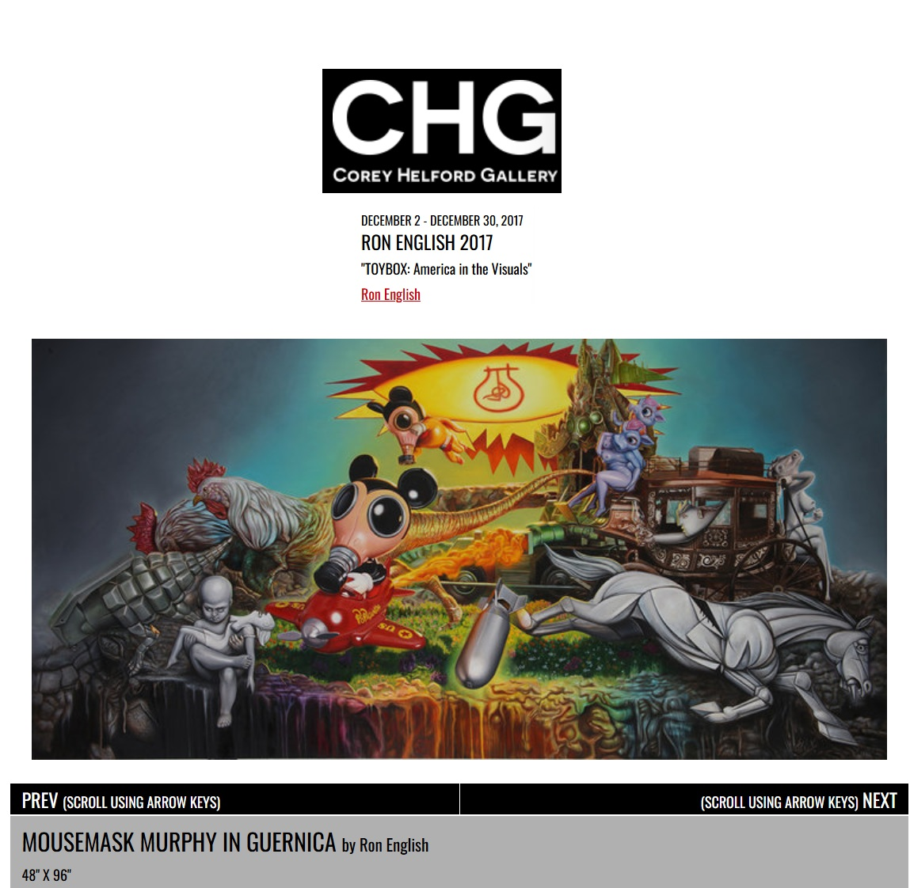
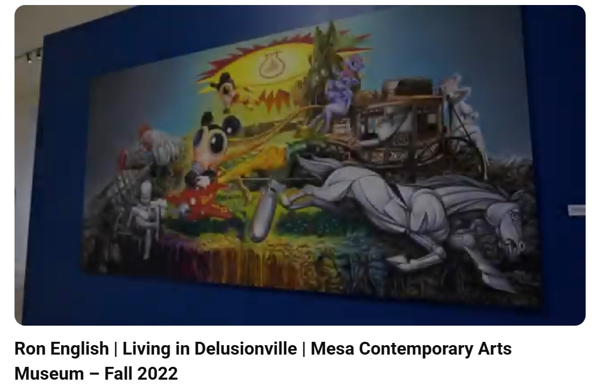
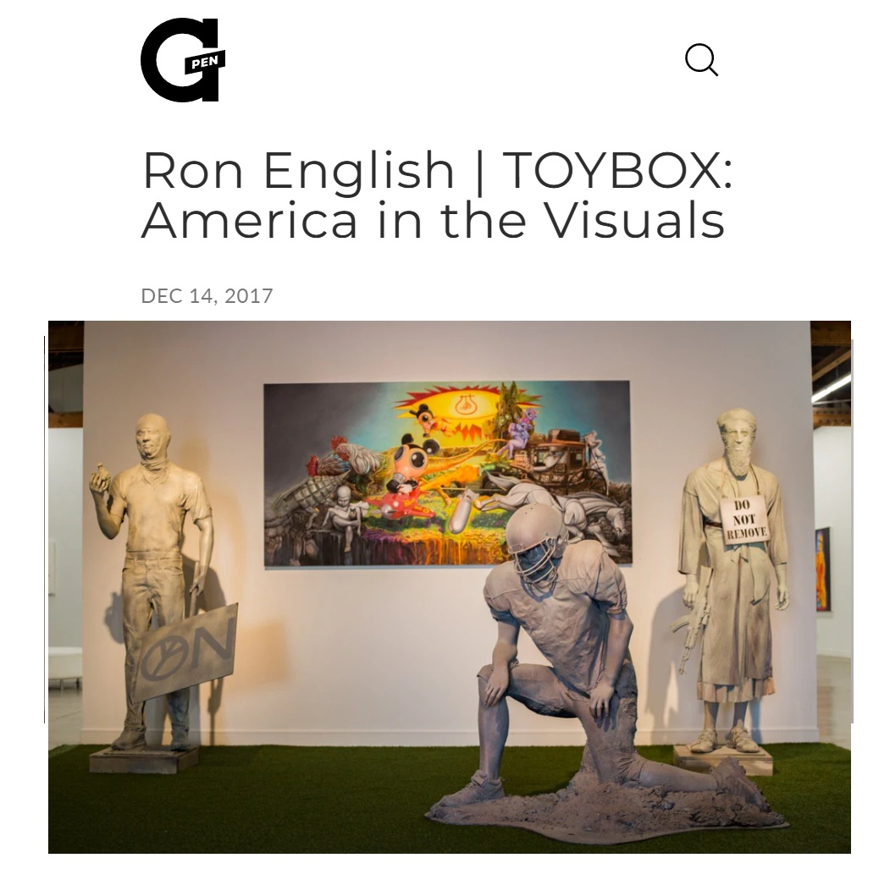
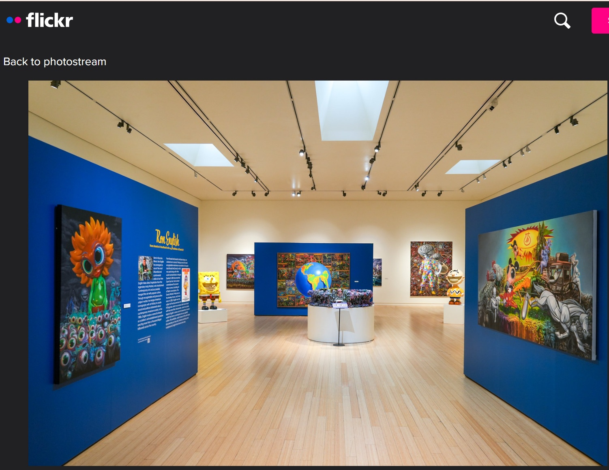

Exhibitions
TOYBOX: America in the Visuals, Corey Helford Gallery, Los Angeles, California, US, December 2–30, 2017.
Living in Delusionville, Mesa Contemporary Arts Museum, Mesa Arts Center, Mesa, Arizona, US, September 9, 2022–January 22, 2023.
Literature
Ron English, Original Grin: The Art of Ron English (Paris: Cernunnos, 2019), p. 225. ISBN 978-2374950938.
Notes
The work references Pablo Picasso’s Guernica.
Ancillary Documentation
The following materials document the study/model, Picasso reference, Corey Helford Gallery object page, Mesa Arts Center exhibition installation, video documentation, and additional online exhibition coverage connected to the work.








Selected Online Circulation
Selected examples of the work’s online circulation, reproduction, or discussion. This list is not exhaustive; it is intended to document representative appearances of the image beyond formal exhibition and publication records.